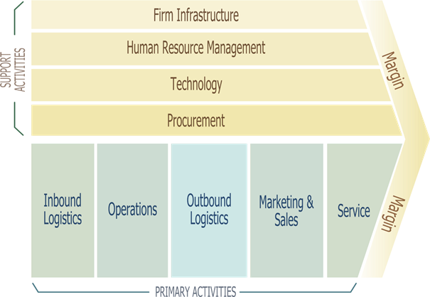

Sissejuhatus
Vaadeldavaks organsatsiooniks on personaliotsingu ettevõte. Peamine eesmärk/teenus on kliendi tellimuse järgi leida neile sobiliku kandidaadi vajaliku ameti positsiooni täitmiseks. Lisateenusteks on:- Tööandja personalialane konsulteerimine. Abistada tööandjad soovitustega: mis suunas ja kuidas võiks töötajaid arendada.
- Töövõtja personalialane konsulteerimine. Tuua välja töötaja tugevad ja nõrgad küljed ja anda soovitused arengu suundade osas.
- Personalitöötajate koolitused. Anda nõuandeid, kuidas personalitöötajad saaksid paremini töötada.
- Muud teenused personalitöö vallast.
- Klientidega kohtumine, nende vajaduse selgitamine, pakkumiste tegemine.
- Töökuulutuste koostamine ning avaldamine pabermeedias ja interneti kanalite kaudu.
- Kandidaatide otsimine, sobilikke kandidaatide välja sorteerimine, sobilike kandidaatide intervjueerimine ja testimine.
- Finaalide (3-4 lõppkandidaati ja tööandja) kohtumise läbiviimine.
- Koolituste läbiviimine.
- Kohtuvad klientidega, selgitamas nende vajadused
- Valivad potentsiaalseid kandidaate, kohtuvad nendega
- Teevad lõpliku valiku kandidaatidest, kes kohtub tööandjaga
- Korraldavad koolitusi
- Koostavad pakkumisi
- Koostavad töökuulutusi
- Organiseerivad ettevõte igapäevast tööd
- Teevad raamatupidamisega seotud töid
- Korraldavad kandidaatide testimise
- CRM, peamine IS, kus on klientide nimekiri, koos vajalike andmetega, kandidaatide ankeedid (CV, märkused, testide tulemused), arhiiv vanadest projektidest ja käimasolevad projektid.
- Raamatupidamis programm.
- Testimiskeskkond, osaliselt sisse ostetud teenusena, osaliselt CRM-s.
- Veebileht.
Porteri mudel
Alljärgnevalt seon Porteri Väärtusahela mudelit ettevõttes kasutatava CRM-ga.
Primary Activities
Inbounnd Logistic – Antud juhul see võiks olla sissetulevad tellimused ja kandidaadid kes kandideerivad mingil konkursile. CRM-s on kõik käimas olevad ja potentsiaalsed projektid. Sammuti CRM-s on kandidaatide andmebaas, see on seotud veebilehega, niimoodi et veebilehel täidetud ankeet/CV sattub CRM.
Operations – kandideerivatest inimhulgast sobilike kandidaatide välja valimine, testimine, intervjueerimine, kliendi nõustamine otsitava kandidaati suhtes. CRM-s saab vaadata kandideeritavate inimeste CV ja teha esmase valiku. Seejärgi võib kokku leppida testimiseks, testi tulemused on salvestatud CRM-s. CRM-s saab paika panna intervjuude ajakava, niimoodi, et kandidaadid ei näeks üks teist ja oleks ka üldine ülevaade sellest, kui palju ja millal tuleb vestluseks.
Outbound Logistics – see võiks olla finaal, ehk lõpliku kandidaadi valimine. Kuigi antud juhul väga palju CRM-ga tegu ei ole, ainult pannakse kirja võitja nime ja projekti sulgemisel raamatupidaja saab teavet, et saab arvet välja kirjutada.
Marketing & Sales – lepingus on kirjas töötaja otsinguks mõeldud meedia kanalid ja eelarve. CRM-s on kirjas mis meedia väljaannetes (nii paber, kui ka internet) ja mis ajal on üleval konkursside kuulutused.
Service – garantiiaeg. CRM-s on kirjas projektisulgemise kuupäev. Sellest kuupäevast hakkab kehtima garantii aeg, mille ulatus ja pikkus on sätestatud lepingus. Kui väljavalitu kandidaat ei sobi ja läheb lühikese aja jooksul ära, siis kas võetakse teist inimest samast finaalist või korraldatakse uus konkurss/otsing.
Support activities
Infrastructure – selles organisatsioonis need tegevused ei ole kajastatud CRM-s.
Technological development – kuna CRM hostitatakse ettevõte siseselt, siis siia võiks arvestada riistvara ja tarkvara mille peal see CRM töötab.
Human Resource Management – CRM-s on kirjas ka kõikide oma töötajate ankeedid, testide tulemused, läbitud koolitused.
Procurement – CRM-s see väga kajastatud ei ole. Ainult, et seal hoitakse kandidaatide testide tulemused, mis on teenusena sisse ostetud testimiskeskkonnast.
Tegevused, mis loovad väärtust kliendi jaoks:
- Tellimuse vastuvõtmine.
- Pakkumuse koostamine.
- Lepingu ettevalmistamine.
- Kliendi nõustamine otsitava kandidaati suhtes.
- Kandidaatide leidmine.
- Kliendi kursis hoidmine konkurssi kulgemisest.
- Nõustamine parima kandidaadi valimiseks.
- Garantiiteenus.
- Kaudsel kliendi jaoks loob väärtus vaadeldava organisatsiooni töötajate pädevus, ehk töötajaid tuleb pidevalt koolitada.
Väärtust loovad faktorid:
- Kiire tellimuse vastuvõtmine.
- Kiire pakkumise tegemine.
- Võimalikult põhjalikult uurida ettevõte tausta ja tegevust, et aru saada keda tegelikult otsitakse.
- Konkurssi avalikustamine võimalikult suurele siht auditooriumile, tagades heade kandidaatide osalemist konkursil.
- Tuginedes kogemusele ja tuues näiteid analoogsetest konkurssidest nõustada kliendi parima kandidaati valimiseks.
- Pidada konkurssi tähtaegadest.
IT SWOT analüüs
Strength – Tugevus
|
Weakness - Nõrkus
|
Opportunities - Võimalused
|
Threats – Ohud
|
CRM puhul on kasutusel andmekeskne lähenemisviis, kuna peamised on klientide ja kandidaatide andmed, mitte see mis nendega tehakse. Andmed ei muutu nii tihti ja nende loogika on projekteeritud konkreetse ettevõte ja konkreetsete protsesside jaoks. CRM on pigem Decision Support System (DSS). Tänu erinevatele filtritele saab välja filtreerida kandidaate, kelle omadused kõige paremini sobivad antud otsingule, otsus põhineb nii kandidaatide enda poolt avaldatud infole kui ka testide tulemustele.
Uue CRM-i omadused
Tuginedes Porteri Väärtusahela ja SWOT analüüsidele saab järeldada uue CRM-i omadusi:- Tellimusi saab võta vastu e-posti või veebilehe kaudu, kust edasi nad automaatselt liiguksid CRM-i ja seal tuleks automaatne teavitus vastutavale inimesele, kes võtab kliendiga ühendust.
- CRM pakub analoogseid toimunud konkursse, et nende abil saaks kiiremini koostada pakkumise.
- Kui CRM-s kliendiettevõtet veel ei ole, siis koostada võimalikult põhjalik kirjeldus ettevõttest. Kui ettevõte on juba CRM-s kliendina olemas, siis uurida mis on muutunud. Selle taustainfo abil saab kliendi nõustada.
- Sisseehitada CRM-i levinumate sotsvõrkudesse kuulutuse lisamise, muutmise ja kustutamise funktsionaalsus.
- CRM peaks pakkuma analoogseid konkursse ja võimalusel ka kommnetaare, mis sellest edasi sai, kas väljavalitu kandidaat osutus heaks valikuks või mitte (ja miks).
- CRM peaks pakkuma nii deadline-e kui ka redline-e, tagades, et kõik saab tehtud õigeaegselt.
- CRM peaks võimalikult palju automatiseerima standardseid tegevusi, et inimestel jääks rohkem aega tegeleda „loomingulisema“ tööga.
- CRM-i kasutus peab olema lihtne.
- CRM-i täiendus peab olema lihtne.